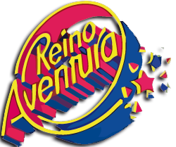

What is Six Flags Mexico?
A small description of the Six Flags in Mexico.
1. What is Six Flags?
Six Flags Entertainment Corporation is the biggest corporation of amusement parks in the world. It was founded in 1961 in Texas, USA. Something not all people know is that the name of Six Flags doesn't come from the number of countries where Six Flags works, but comes the number of waving flags which have been in Texas, from Spain to the USA.
2. History
i. Reino Aventura
The appearance of Six Flags in Mexico was not instantaneous. At the end of 1982, an amusement park named Reino Aventura was opened in the south part of Mexico City. This park was famous for some of its attractions and, also, for Keiko, the famous killer whale which appeared in the movie Free Willy.
After a remodeling and big changes, in 1992 it was reopened with a new name: Nuevo Reino Aventura (New Adventure kingdom in english) but, due to an accident, the owners of the park decided to close it. Nonetheless, in 1999, Reino Aventura was bought for 59 million dolars by Premier Parks, the owner of Six Flags and after another remodeling and the creation of new attractions, the park was reopen in 2000 under the name Six Flags México.
ii. Why Mexico?
According to some interviews to the last owners of Premier Parks, they were interested in small parks which have already build some attractions so they do not have to put a lot of invest in new attractions.
At this moment, Six Flags Mexico is the largest amusement park in latinamerica and one of the most important theme parks in Mexico.
3. Small Comparison
In this part, we decided to show a small comparison in velocity between some attractions of the park.
| Attraction | Velocity | Height |
|---|---|---|
| The Joker | 50 km/h | 15 m |
| Wonder Woman Coaster | 61 km/h | 34 m |
| Boomerang | 76 km/h | 37 m |
| Batman: The Ride | 80 km/h | 32 m |
| Superman: El último Escape | 123 km/h | 67 m |
| Medusa Steel Coaster | 93 km/h | 36 m |
| Crazanity | 120 km/h | 52.5 m |
| Kilahuea | 80 km/h | 67 m |
| Super Girl Sky Flight | 60 km/h | 74 m |
As we can see, Six Flags Mexico has some attractions which can be considered as extreme. Superman: El Último Escape and Crazanity are considered as the fasetes attractions in the park, and Super Girl Sky Flight is the highest attraction in the park.
4. Personal Review
I have visited Six Flags Mexico more than twice since I have memory. I have created a lot of memories there with family and friends and I have seen
the park change through the years. From my point of view, is not that expensive and you can have fun in almost all the attractions in one day.
Nevertheless, it is common to find a lot of people inside the park, so the experience may be not the mos comfortable due to the crowd and the food
is the only thing thatis expensive (for me).
The park has more pros than cons so I recomend you to go early and during weekdays to enjoy what Six Flags Mexico has to offer.